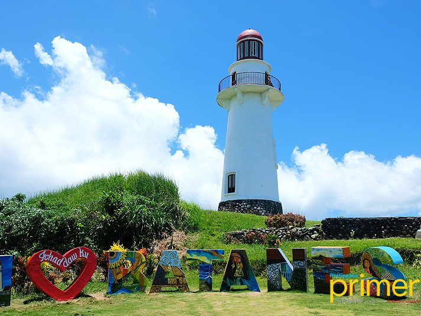
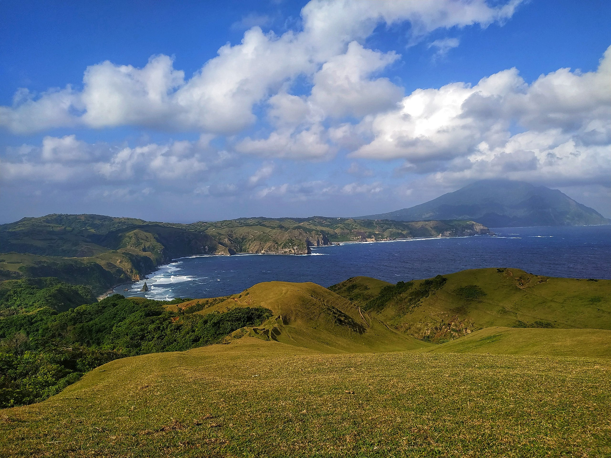
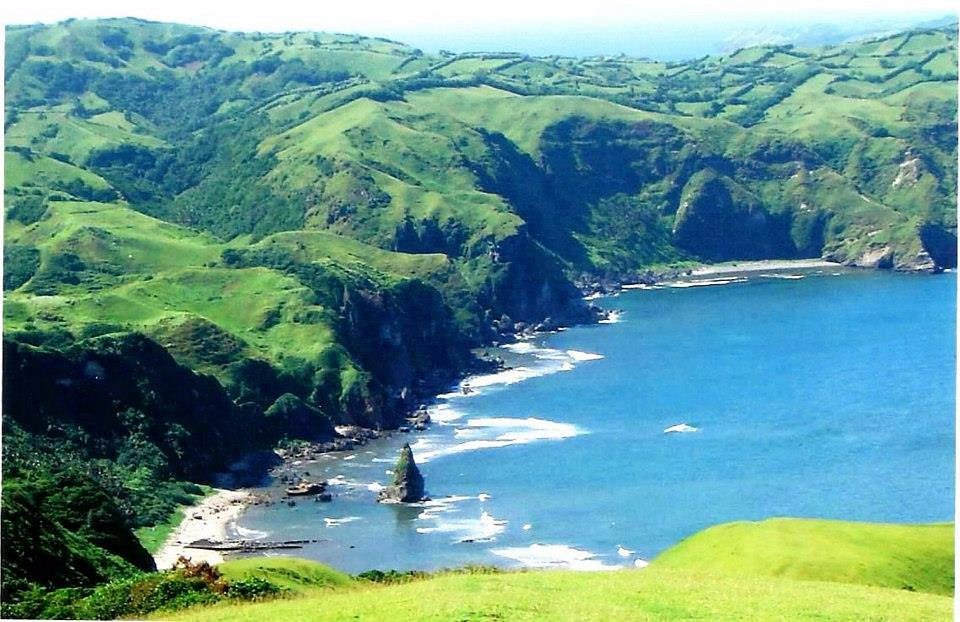
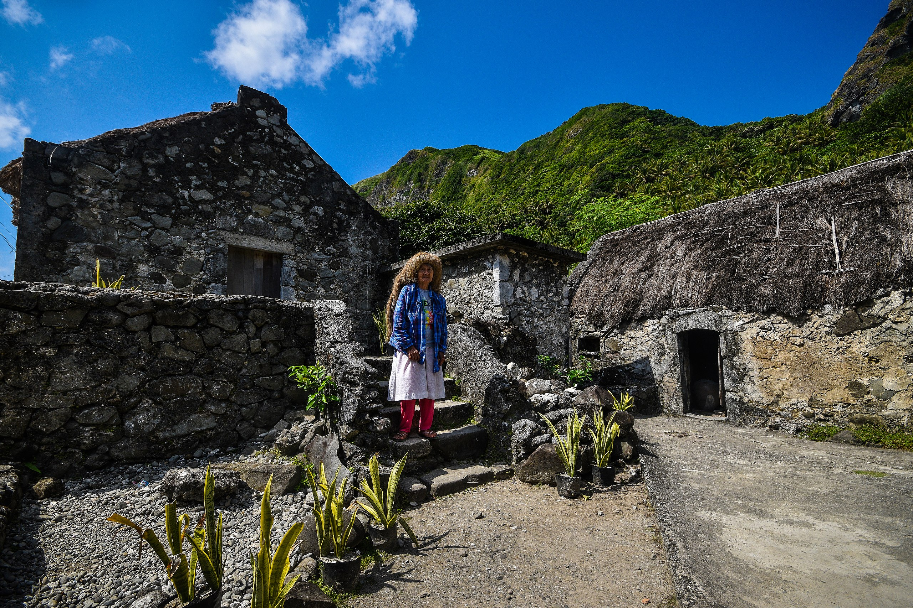
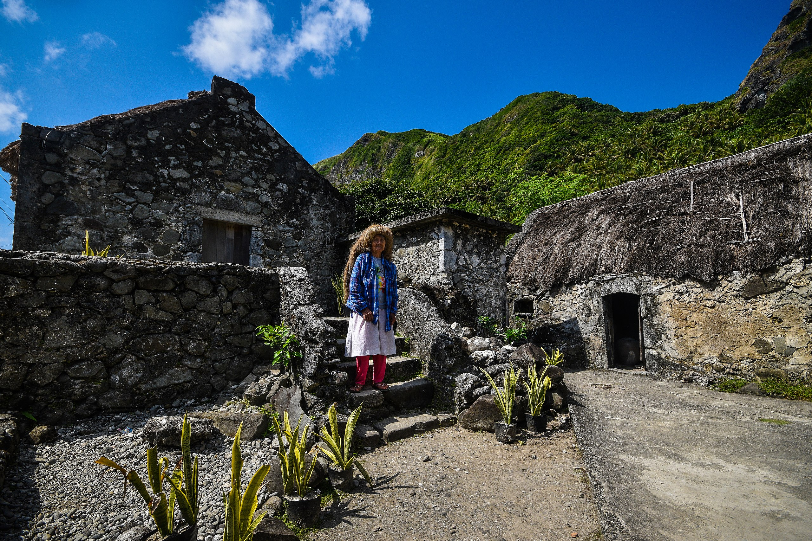

Top Tourist Spots in Batanes
   

| Spot | Description |
|---|---|
| Basco Lighthouse | Iconic lighthouse offering panoramic views of Basco and the sea. |
| Marlboro Hills (Racuh a Payaman) | Vast rolling hills with breathtaking landscapes and grazing cows. |
| Sabtang Island | Known for its traditional Ivatan stone houses and scenic coastal roads. |
| Batan Island | Is the main island of Batanes, an archipelagic province in the Philippines. |
| Chavayan Village | Picturesque village with centuries-old Ivatan houses and culture. |
Back to Home